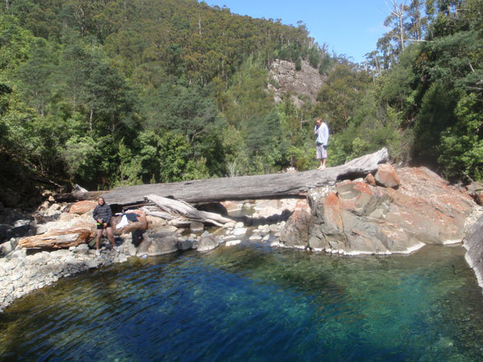
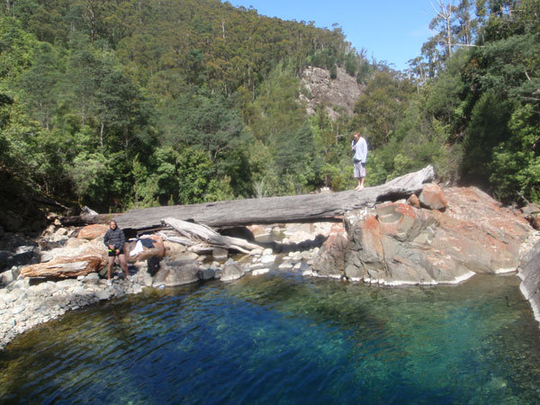

Nature
Hiking and exploring nature can be pretty amazing. Though please respect the earth (try to not disturb things), the environment (take all rubbish away with you) and other animals (you're visiting their home), it is more rewarding that way! Also make sure you have the appropriate food, water and waterproof gear to cover for the worst-case-scenario of where you are visiting.


 
